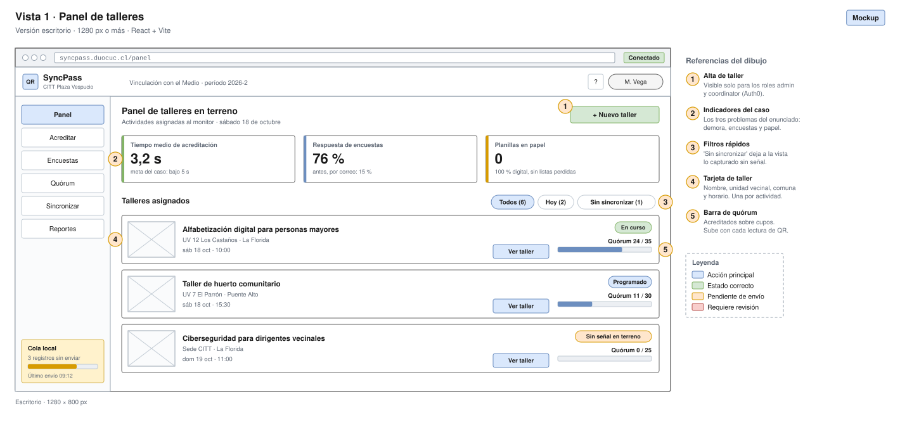

SyncPass
| CITT Plaza Vespucio
Aplicación Web
Mockups & BD
Login
Mockups y modelos de datos · Caso SyncPass
Acreditación QR, encuestas inmediatas y modo offline-first (DSY1105 / DSY1104)
Escritorio
Tablet
Móvil Android
Vistas del sistema
Una vista por rol (grupos de Cognito)
CRUD, base de datos e infraestructura

Abrir el dibujo en una pestaña
Ver la documentación escrita
Abrir esta función en SyncPass
Seguir navegando desde aquí